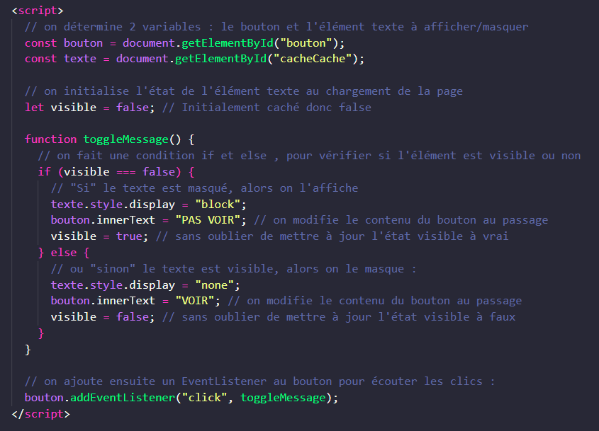

Apprendre JavaScript | Exercice 1 application (suite) :
Bienvenue sur cette page
(vous pouvez masquer ce message)
VOIR
Froggiesplaining :
Effet "Toggle"
Nous venons de réaliser un "effet Toggle", comme pour afficher une legende au clic sous une image ou ouvrir un menur en cliquant sur un burgermenu par exemple
